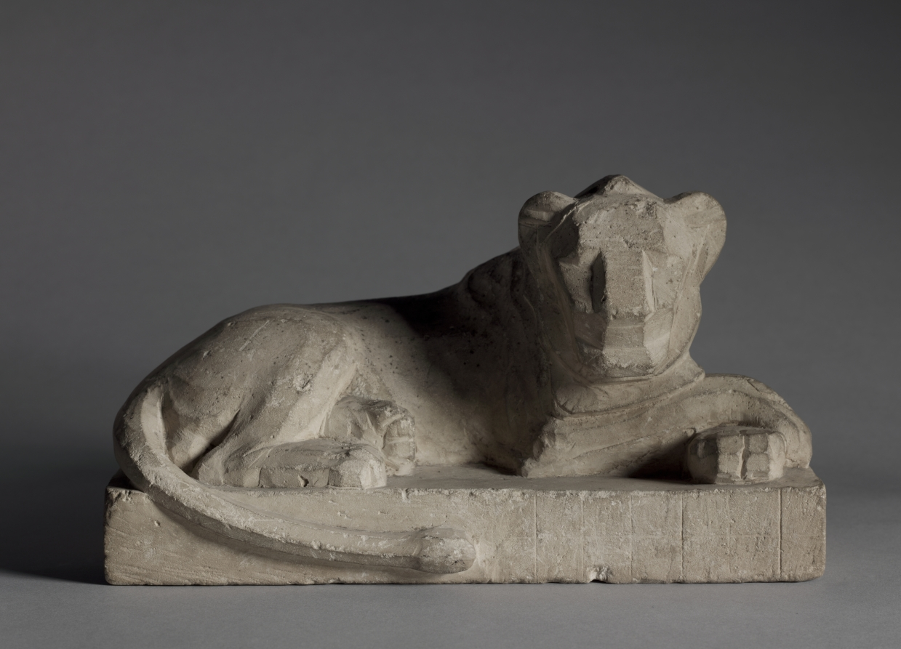
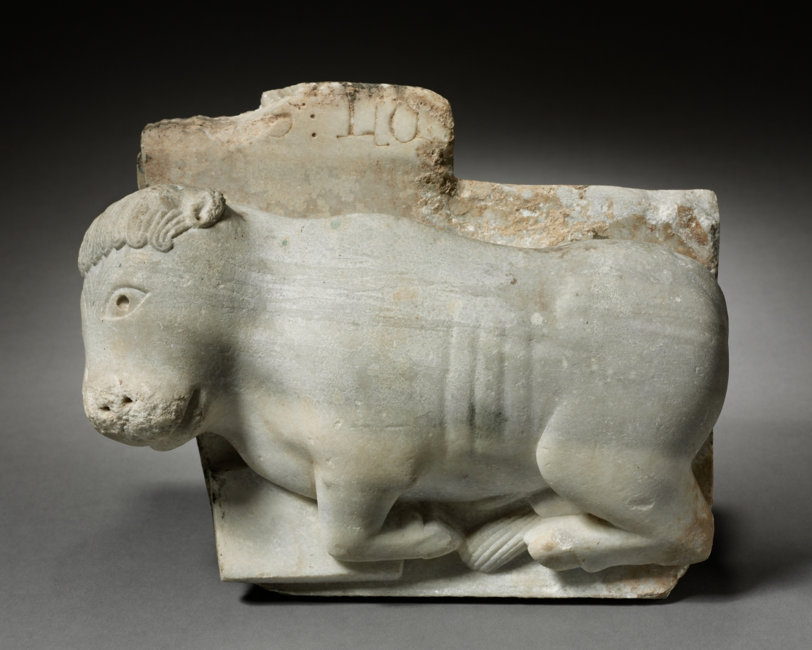
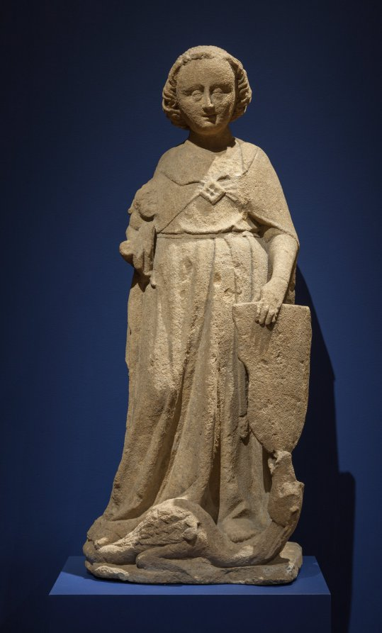
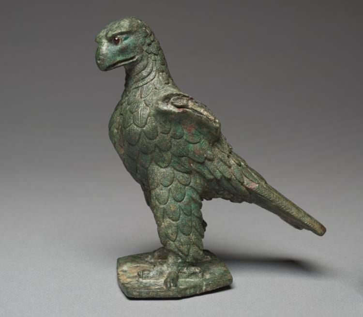

Four Faces — statue candidates
Every option shown in the exact on-site treatment (arched plate, sepia, accent tint — hover to lift the veil). All images are CC0 museum open-access. Pick one code per face (e.g. “L3, O2, M5, E1”) and the site gets updated. The gold-outlined first card in each row is what's live now.
Lion (pick one code, e.g. "L3")

(what is on the site now)
Statuette of a Lion · 380–246 BCE · Cleveland

Daniel in the Lion's Den
c. 1125–50 · Cleveland

Saint Jerome and the Lion (From the former Church of St. Peter in Erfurt)
c. 1495 · Cleveland

Engaged Capital with a Lion and a Basilisk
1175–1200 · Cleveland

Lion
100s–200s CE · Cleveland

Composite Lion and Bull
1500–1000 BCE · Cleveland

Yoga Narashimha, Vishnu in his Man-Lion Avatar
c. 1250 · Cleveland
Ox (pick one code, e.g. "O3")

(what is on the site now)
Capital with the Ox of St Luke · c. 1175 · Cleveland

Apis Bull
400–100 BCE · Cleveland

Pawing Bull
500–475 BCE · Cleveland

Bull Head Attachment
c. 700–600 BCE · Cleveland

Bull Calf Polemount
c. 2700 BCE · Cleveland

Recumbent Bull
700s · Cleveland

Head of a Bull
3000–2000 BCE · Cleveland
Composite Lion and Bull
1500–1000 BCE · Cleveland

Bull Procession Cup
c. 3100–2900 BCE · Cleveland
Man (pick one code, e.g. "M3")

(what is on the site now)
Saint Michael the Archangel · c. 1280 · Cleveland

Portrait Head of a Man
c. 100 CE · Cleveland

Fragment: Head of a Man
100 BCE–100 CE · Cleveland

Head of a Man
1520–1525 · Cleveland

Head of a Bearded Man
c. 125 CE · Cleveland

Head of a Foreign Warrior
300–200 BCE · Cleveland

Portrait Head of C. Cornelius Gallus (?)
c. 30 BCE · Cleveland

Portrait Bust of an Aristocratic Man
280–90 CE · Cleveland

Portrait Head of a Noble or Official
175–200 CE · Cleveland

Saint John the Baptist
c. 1500 · Cleveland

Columnar Figure of an Apostle
c. 1180 · Cleveland
Eagle (pick one code, e.g. "E3")

(what is on the site now)
Imperial Eagle · 100 BCE–100 CE · Cleveland

Engaged Capital with Figures of a Man and of an Eagle
1175–1200 · Cleveland

Mask: Eagle
1800s · Cleveland

Plaque: Eagle with Snake
c.1830 – 1875 · Cleveland

Pediment with an Eagle
400s · Cleveland

Eagle with Chamois
c. 1830 – 1875 · Cleveland

Eagle-Shaped Fibula
500s · Cleveland

Eagle-Shaped Fibula
500s · Cleveland